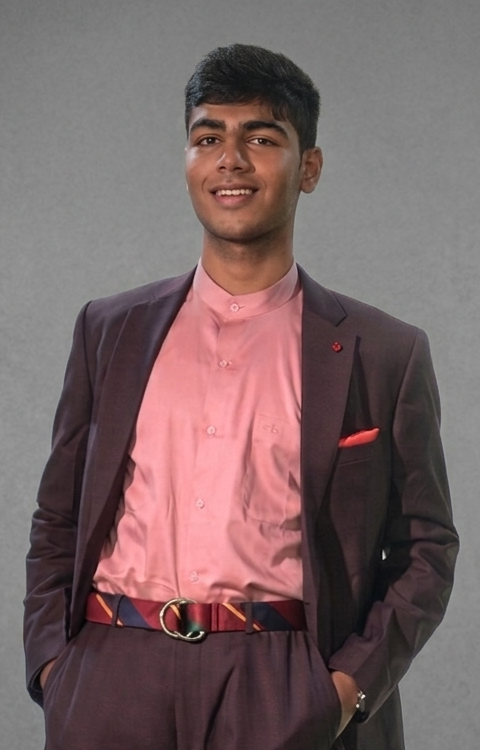

I am driven by research and engineering at the frontier of intelligent systems, understanding how they work, where they break, and how to push the boundary. The world around me raises questions, and I’m drawn to seek the answers.
Last updated: Aug 16, 2026

Four open questions I'm working through right now: part reading, part prototyping. I'd love to hear your thoughts or explore them together.